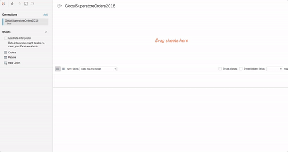
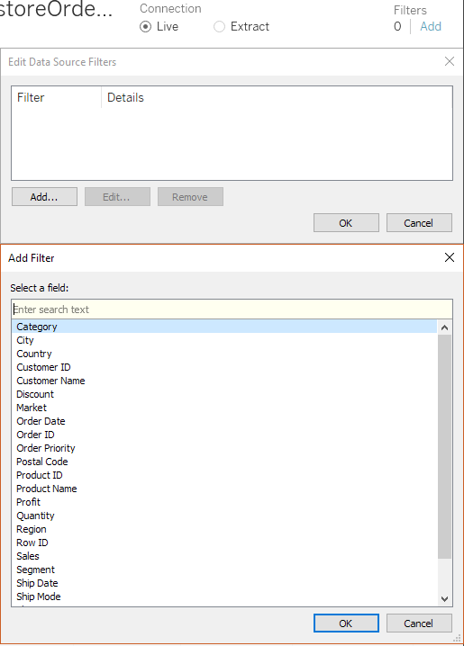
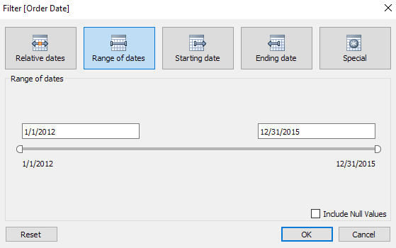
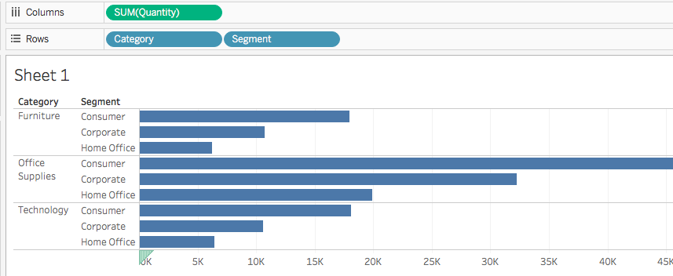
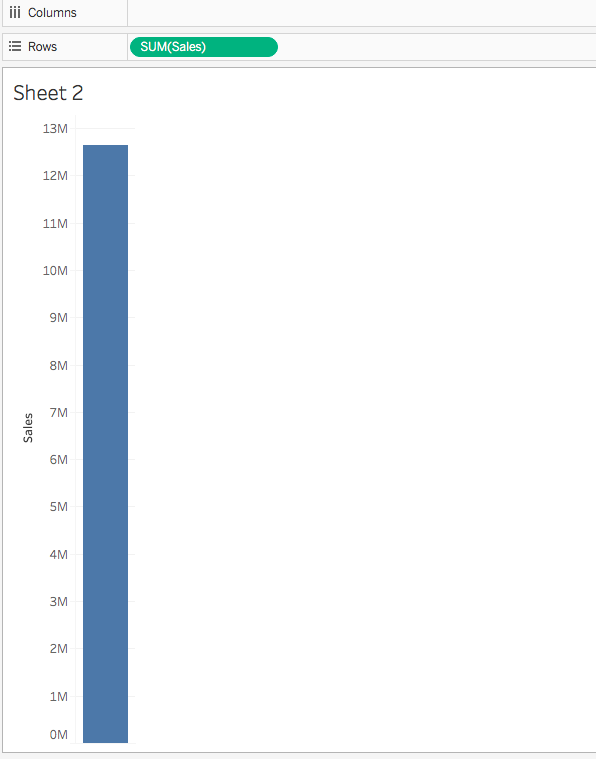
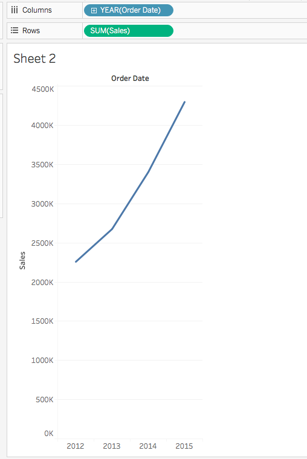
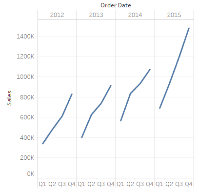
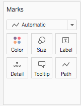

Objectives For Today
- Tableau
Why Learn?
Tableau is an enterprise visualization software. It takes most data sources and creates visualizations without the need for coding. Most business or data analyst would have some experience in this software.
In a nutshell, Tableau is very good with numbers. Financial reports and metrics may work well with Tableau. But for anything else, you'll need a custom dashboard.
Tableau assumes the data to be CLEAN. It is able to do filtering and stuff, but you'll have to make sure the source data is clean overall.
Caveats on Tableau
Many companies may not be able to afford Tableau, and even if they have licenses, it is not distributed freely to everyone within the organization.
That's why we learned how to build visualizations on Javascript as an alternative.
Be aware that for Tableau public, your data is exposed publicly. It may not be wise to use Tableau Public for your work.
Install Tableau
You'll have to exchange your email address for Tableau to download Tableau here: https://public.tableau.com/s/
Install the Tableau Public version because it's free. We're not going into the enterprise version, but majority of the features will be included.
Loading and Exploring Data
Things to note:
- Visualizations are dynamic. There isn't only one day to do things, but we teach you one way so that you can experiment by yourselves.
- Tableau can connect to data files (CSV, XLS, and JSON), servers (MySQL, MongoDB, and Google Cloud), and many types of sources.
- You can do joins from different sources.
- Open the Excel file in your activity.
- 
- Tableau does not allow its users to change the values contained within the cells of a dataset, but it is possible to create new columns based upon the values of other columns.
- Visualization systems shouldn't allow the anyone to change the original data that easily. It's to protect the raw dataset.
- Filtering data can be done on the "Add" button on the top-right of Tableau.
- 
- You can filter anything you want according to the values you desire. The dates in "Order Date" is most interesting:
- 
Building Basic Visuals
We're building basic visuals for Tableau.
Things to note:
- What we're doing here is similar to pivot tables in Excel:
- Dimensions are categorical fields that data can be split up by.
- Measures are metrics or numbers that uses would like to analyze.
- To get started:
- Drag the Category pill from the Dimensions panel into Rows. It's on the left side panel, or on the top bar beneath Columns.
- Drag Segment into Rows.
- These are column headers in the Excel file.
- It should look like this:

- Drag the Quantity from the Measurements panel, and you should see this:
- 
- Tableau automatically aggregated the Quantity into a sum.
- By adding Market into Columns, we can group by each geographic market for quantity.

Dragging and dropping is easy. Question: If anybody can do that, what's the difference between a good business analyst and a novice business analyst?
Let's try something else:
- Create a new worksheet. It is found at the bottom left corner of the interface.
- Drag Sales into Rows. You should get something like this:
- 
- This is total sum by default, because Tableau sums everything for you.
- If you want something else, click on the pill and a menu will show like this:

- Drag Order Date into Columns to create a basic line chart. You should see this:
- 
- Tableau filters by year for you. Depending on the source data's availability, you could split the data by quarters, months, weeks, or even days by clicking on the pill and changing the attributes, or just click the plus symbol:
- 
- To compare Quarters for each year, simple move the QUARTER pill before year:

Students Do: Explore Data
Students Do: No-Show Tableau Visualization
This time, you will be doing visualizations on the no_shows.csv file.
Line Chart which compares ages to the total number of appointments.
- Drag Age in Columns and Number Of Records into Rows.
- Switch Age into a dimension by clicking on the pill and selecting Dimension.
- To split the results by gender, drag Gender into Rows.
- To get no-show appointments, drag No-show to Columns.
No-shows By Neighborhood
- Drag No-show and Number of Records to Columns, and Neighborhoods to Rows.
No-shows By Day of week
- Drag Scheduled Day to Columns and Number of Records to Rows.
- Select Weekday under the Scheduled Day pill.
- To get a bar chart, select the Stacked Bar Chart option under Show Me.
- Drag the No-show dimension under Marks on the left of the graph. The visuals will display accordingly.
No. of diabetics by gender and across age groups
- Drag Diabetes and Age into Columns and Gender and Number of Records into Rows.
- We don't want results from the people who doesn't have diabetes, so we need to filter Diabetes to 'Yes'.
No. of alcoholisms by gender and across age groups
- Exact same steps for diabetic problems.
05-Ins_EasyJoins
We are doing joins again. The best part of it is that Tableau can open data from different sources and formats, and merge them into one single entity (provided the keys are the same).
To do that:
- Open up the Excel file one more time within Tableau and drag the Orders sheet into the main area.
- Add People into the mix.

- You can now use joins between two tables. Tableau automatically maps matching columns for you. You can change the columns as you see above.
- It is also possible to create joins across data sources.
- Add another Excel file into the mix, and you will see the joins which you've seen before. This time, it will be Order ID.
- You can do custom split on a column for text. This is similar to Excel by clicking on the dropdown menu and choosing Custom Split.

Students Do: Major League Baseball Analysis
Break - 15 mins @ 8:05pm
07-Stu_UltimateCandy: Your Turn
There are different styling tools for you to use within Tableau for graphs:
- Color: Modifies the color of the elements. Self-explanatory.
- Size: Modifies the size of the elements. Self-explanatory.
- Labels: Text beside points to describe the data.
- Detail and Tooltip: Almost like popups where it only appears when you hover the data point.
- Shape: Modifies the shape of the elements. Self-explanatory.
To use them, drag and drop.
Win Percentage of Candies, and Chocolate Vs Fruity
- Drag Competitor Name into Rows, and 2 Winpercent pills into Columns.
- Determine that the left chart is going to be chocolate, while the right is going to be fruity. It's up to you.
- In the Data Source tab, both Chocolate and Fruity hold
trueorfalse. - Select the left chart by clicking on the corresponding Winpercent pill.
- Drag Chocolate into the Marks panel, and unto the Color button. You will see a
TrueandFalsetab on the right. - Do the same for Fruity.
Scatterplot comparing sugar % vs win % for chocolates
- Drag Winpercent into Columns, and Sugarpercent into Rows.
- To delineate Chocolate, drag the pill into Color.
- To size the points according to price, drag Pricepercent into Size.
- To add details to each data point, drag Competitorname into Detail.
Scatterplot comparing sugar % vs win % for fruity
- Identical to the above.
08-Ins_Storytelling
Storytelling is unique to Tableau, where we have a bunch of text-boxes on top for this view for presentation:

Each tab points to a new visualization within the workbook.
You can create your own story at the bottom left of the application here:

Captions appear at the top of the application. You can add or edit. Create your worksheet first, then drag and drop from the left sidebar into the layout.
Students Do: Degrees That Pay
Create the visualizations first before you do your story board. You have 3 different CSVs, and they don't always corelate to each other.
Ivy League Grads vs State School Grads
- Select
salaries-by-college-typedata as data source. - Drag School Type and Measure Names to Columns, and Measure Values to Rows.
- Measure Names and Measure Values are automatically generated by Tableau: https://onlinehelp.tableau.com/current/pro/desktop/en-us/datafields_understanddatawindow_meavalues.htm
- Measure Names is a compilation of column names, while Measure Values is a compilation of data from the Measures panel.
- Remove unwanted columns under the Measure Values panel for a more concise report.
- Change the results to AVG instead of SUM.
- Color code the Measure Names.
California/NE vs other regions
- Select
salaries-by-regiondata as data source. - It's the same steps as above.
Higher Starting Salaries and Higher Salaries Mid-career Correlation
- Select
degrees-that-pay-backdata as data source. - Drag Starting Median Salary into Columns, and Mid-Career Median Salary into Rows.
- Drag Undergraduate Major to the Detail button.
- Drag Percent change from Starting to Mid-Career Salary to the Size button.
Visualize median salaries by major, against mid-career midian, 75th percentile and 90th percentile salaries
- Select
degrees-that-pay-backdata as data source. - Drag Measure Values into Columns, and Undergraduate Major into Rows.
- Remove unwanted columns under the Measure Values panel for a more concise report.
- Drag Measured Names into the Color button to color code it.
- Drag Percent change ... into the Detail button.
- Change the bar chart to circles under the drop-down menu in Marks.
With the four sheets above, create a story under the New Story button and link the relevant sheets to the story boards.